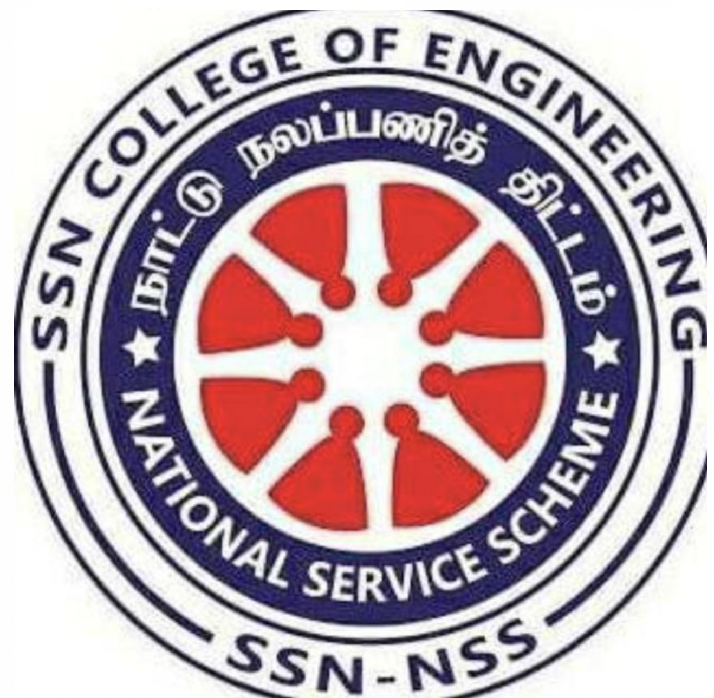

| Organization | Role |
|---|---|
Maths Club |
Event CoordinatorLarge scale flagship event of SSN Maths Club named, "exlog". Handled this event for the year 2022. Coordinated six events, handled behind the scene tasks by synchronizing and communicating with the entire team. Enabled external resources for the event which include videography abd photography. Also, was an critical incharge of the registration and prize distribution. |

National Service Scheme |
Event Organizer
|